Visualise jst_* result objects or plot variables directly from a data frame
jplot.RdUnified plotting function. Can be called in three ways:
Usage
jplot(x, which = "core", ...)
# Default S3 method
jplot(
x,
...,
by = NULL,
type = NULL,
line = FALSE,
equation = TRUE,
r2 = TRUE,
band = "ci",
subset = NULL,
labels = NULL,
numeric = NULL,
categorical = NULL,
count = NULL
)
# S3 method for class 'jst_lm'
jplot(
x,
which = "core",
focal = NULL,
at = "zero",
equation = TRUE,
r2 = TRUE,
...
)
# S3 method for class 'jst_logistic'
jplot(x, which = "core", focal = NULL, at = "zero", ...)
# S3 method for class 'jst_ttest'
jplot(x, which = "core", ...)
# S3 method for class 'jst_anova'
jplot(x, which = "core", ...)
# S3 method for class 'jst_corr'
jplot(x, which = "core", ...)
# S3 method for class 'jst_crosstab'
jplot(x, which = "core", ...)
# S3 method for class 'jst_desc'
jplot(x, which = "core", ...)
# S3 method for class 'jst_freq'
jplot(x, which = "core", ...)Arguments
- x
A result object from one of the package's analysis functions (result-object form), or a data frame (data-first form).
- which
Character vector.
core(default),all, or one or more specific plot names valid for the object's class. (Result-object form only.)- ...
Additional arguments: for the result-object form these are passed to class-specific methods; for the data-first form these are unquoted variable names (1 or 2).
- by
Unquoted variable name for group-coloring (data-first form).
- type
Character. Plot type override for the data-first form. One of
histogram,bar,scatter,box,grouped_bar. If NULL (default), auto-detected from variable types.- line
Controls a line overlay on data-first scatter plots. One of
FALSE(default; no line),TRUE(alias forlm),lm,loess,connect.- equation
Logical. If TRUE (default), displays the equation in the subtitle for
line = "lm"scatter plots (data-first form) orjst_lmfitplots (result-object form).- r2
Logical. If TRUE (default), displays R-squared in the subtitle alongside the equation.
- band
Character. Uncertainty band type for
line = "lm"scatter plots. One ofci(default; 95% confidence band for the mean, flares at the ends),pi(95% prediction interval for individual observations),see(constant-width band at +/- t*SEE; useful for teaching homoskedasticity),none.- subset
Optional unquoted logical expression to filter cases for this call only (data-first form).
- labels
Character or NULL. Variable label display mode (data-first and formula forms): one of
"both","names","labels","legend", or"legend.bottom"."names"uses variable names as axis/legend titles;"labels"uses each variable's label as its axis/legend title instead (falling back to the name when unlabelled) and prints no console legend;"legend"and"legend.bottom"keep names on the axes and print a console label legend."both"is accepted but currently renders as"names"on plots (the"name: label"form for plot titles is deferred to a later phase). NULL (default) defers tojoutput()'svariable.idsetting. Not a logical.- numeric
Optional character vector of plotted-variable names to treat as continuous for this call (the per-call counterpart of
jnumeric()). Injplot()a variable's class chooses the geometry, so this forces numeric handling (histogram for a single variable; scatter / numeric axis in the formula and two-variable forms). Applies to the plotted variables only, not thebygrouping variable.- categorical
Optional character vector of plotted-variable names to treat as categorical for this call (the per-call counterpart of
jdummy()for plotting purposes). Forces categorical geometry (bar for a single variable; box / categorical axis in the formula form). A variable cannot be listed in bothcategoricalandnumeric/count.- count
Optional character vector of plotted-variable names to treat as counts for this call (the per-call counterpart of
jcount()). A count is numeric-like for plotting, so it draws the same asnumeric; it is provided for symmetry with the other analysis functions.- focal
Unquoted name of the independent variable to place on the x-axis for
jst_lm/jst_logisticfitandprobabilityplots. Defaults to the first IV in the model.- at
Character string or named list specifying where non-focal independent variables are held when drawing the fitted line in
jst_lm/jst_logisticmethods. One ofzero(default),mean,mixed(categorical at 0, interval at mean), or a named listlist(Var1 = value, ...).
Value
Invisibly, a single ggplot object if one plot is produced,
or a named list of ggplot objects if multiple are produced
(result-object form). Invisibly returns the ggplot object for
the data-first form.
Details
Result-object form: Pass a result object returned by one of the package's analysis functions. Produces appropriate plots for each class of result (see valid plot names below).
Formula form (for plots that distinguish DV from IV): Pass a
formula as the first argument, followed optionally by a data frame. Used
for scatterplots and boxplots, consistent with the formula syntax of
jlm(), jaov(), and jt(). The DV on the left of
~ goes on the y-axis; the IV on the right goes on the x-axis. Only
single-IV formulas are supported here; for multi-IV models, fit with
jlm() and pass the result to jplot().
Variable-list form (for distributions and counts): Pass a data frame followed by one or two unquoted variable names. Used for histograms (1 numeric), bar charts (1 categorical), and grouped bar charts (2 categorical). Calls that would otherwise auto-detect to a scatter or boxplot produce a helpful error directing you to the formula form.
Supports pipeline integration (jsubset, jcomplete, per-call
subset), grouping via by = , and regression lines with
equation/R-squared/band annotations.
Valid plot names by class (for the result-object form):
jst_lm:fit,predicted,effects,coef,vif,residuals,qq,scale,cooks,leveragejst_logistic:probability,roc,calibration,binned,cooks,leverage,coef,vifjst_ttest,jst_anova:boxjst_corr:heatmap,scatter(scatter requires exactly 2 variables in the correlation)jst_crosstab:bar
The shortcut keyword core (default) produces a curated default
set for the class; all produces every plot the class supports.
Valid plot types for the data-first form: histogram, bar,
scatter, box, grouped_bar.
Valid line values: FALSE (default), TRUE (alias for
lm), lm, loess, connect.
Valid band values: ci (default confidence band around the
regression line, flares at the ends), pi (prediction interval for
individual observations, wider), see (constant-width +/- t*SEE
band illustrating the homoskedasticity assumption), none (no band).
Methods (by class)
jplot(default): the default method: a scatter or box plot from a formula (DV ~ IV), or a histogram or bar chart from a data frame and one or more variables.jplot(jst_lm): diagnostic, coefficient (forest), and fitted-effect plots for ajlm()linear-regression result.jplot(jst_logistic): predicted-probability (S-curve) and coefficient plots for ajlogistic()result.jplot(jst_ttest): a group-comparison box plot for ajt()result, with the group means marked.jplot(jst_anova): a group-comparison box plot for ajaov()result, with the group means marked.jplot(jst_corr): a heat-map of the correlation matrix for ajcorr()result, or a scatter plot for a single pair.jplot(jst_crosstab): a grouped bar chart of cell counts for ajcrosstab()result.jplot(jst_desc): (planned) direct plotting of ajdesc()result is not yet available; this method points you to the data-first form, for examplejplot(data, Variable).jplot(jst_freq): (planned) direct plotting of ajfreq()result is not yet available; this method points you to the data-first form, for examplejplot(data, Variable).
See also
jstats for the package overview,
workflow conventions, and complete function listing.
Examples
# Result-object form
m <- jlm(WellbeingScore ~ Income + Age, community)
#> Linear Regression
#>
#> Case Processing Excluded Remaining
#> Original — 103
#> Auto-listwise 6 97
#> Analysis N — 97
#>
#> Missing-data breakdown From 103 %
#> Income
#> Missing 6 5.8
#>
#> ──────────────────────────────────────
#>
#>
#> Coefficients
#> b SE t β p
#> ----------- ------ ----- ----- ----- -----
#> (Intercept) 24.815 3.749 6.620 <.001
#> Income 0.000 0.000 6.813 0.564 <.001
#> Age 0.181 0.082 2.208 0.183 .030
#>
#> Outcome: WellbeingScore
#>
#> R-squared: 0.411 Adjusted R-squared: 0.398
#> Residual Standard Error: 9.013
#>
#> F-statistic: 32.729 on 2 and 94 DF, p-value: <.001
#> Sum of Squares:
#> Regression: 5317.416
#> Residual: 7635.945
#> Total: 12953.361
#>
jplot(m) # core diagnostics + fit plot
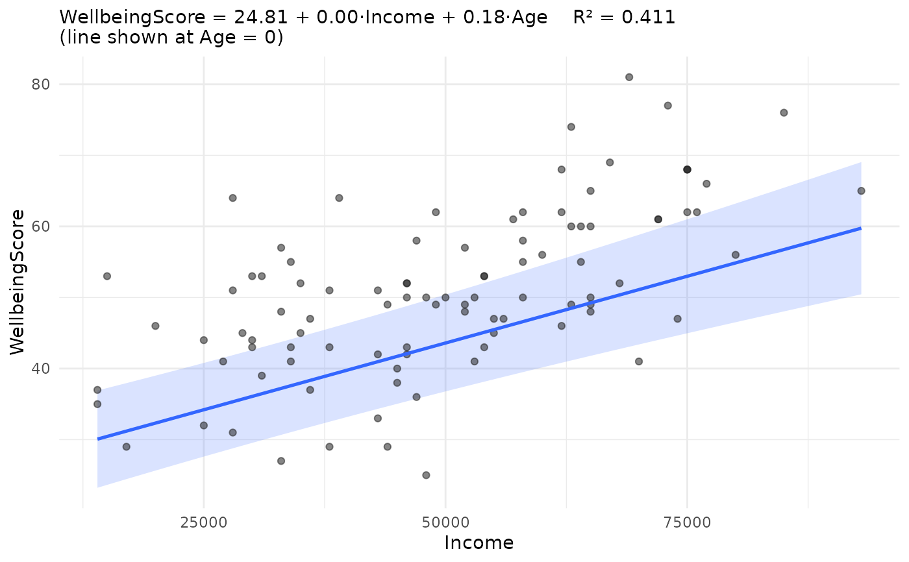
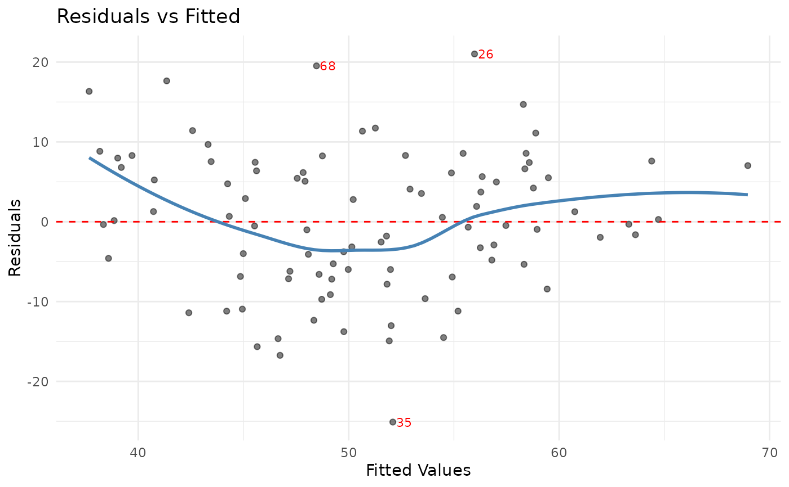
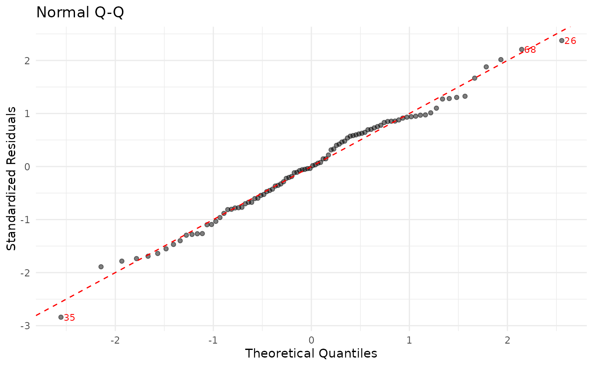
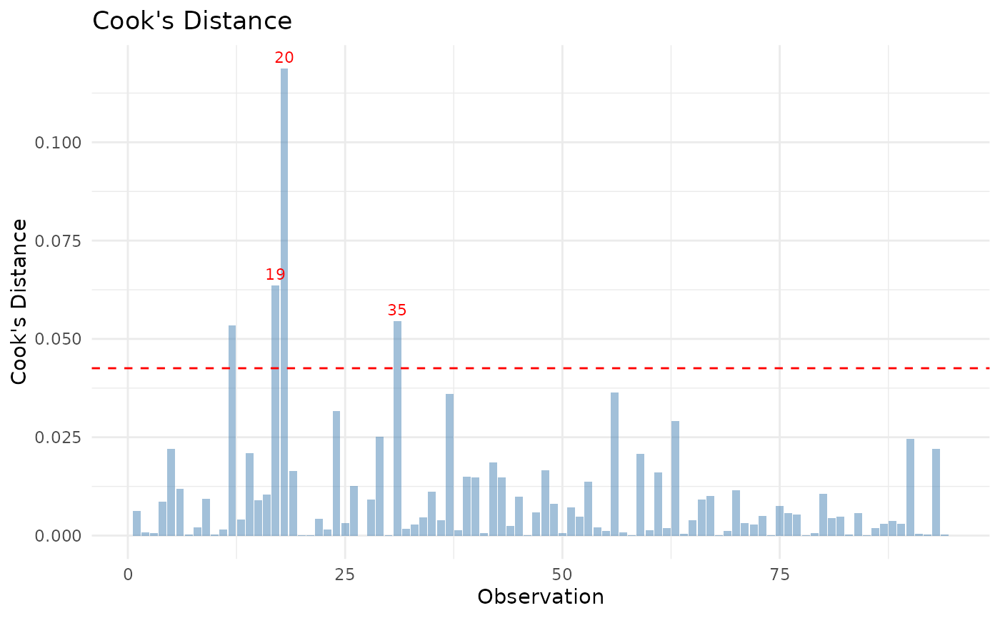
jplot(m, which = "coef") # coefficient forest plot
#> `height` was translated to `width`.
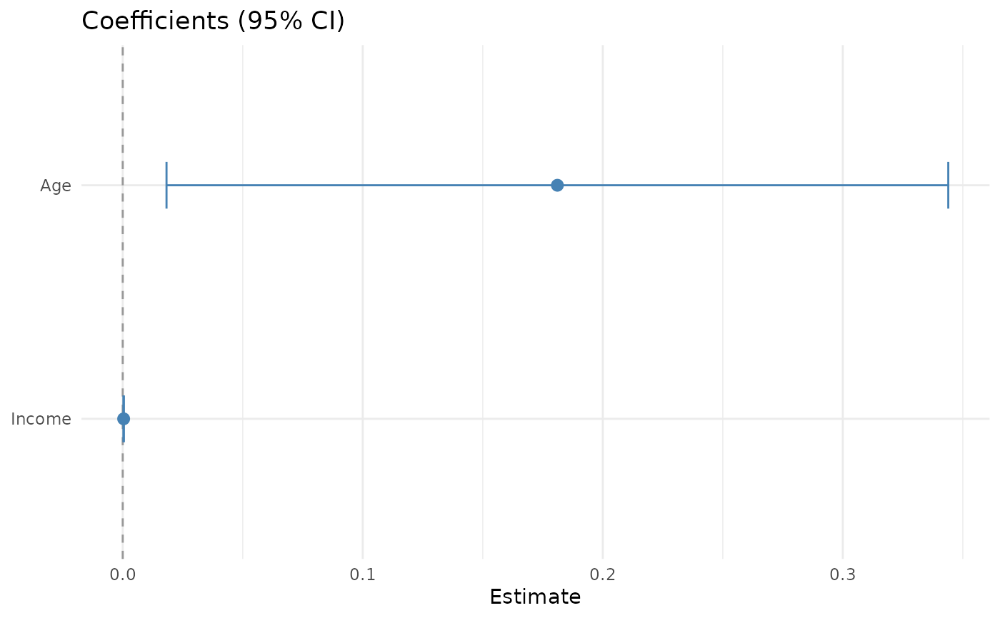
jplot(m, which = "fit", focal = Age, at = "mean")
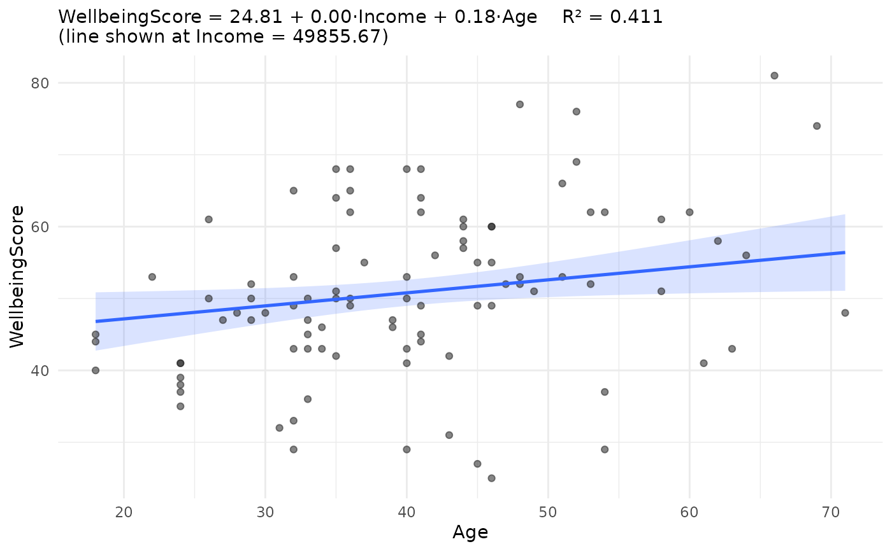
# Formula form (scatter and box)
jplot(WellbeingScore ~ Income, community) # scatter
#> Scatterplot: WellbeingScore and Income
#>
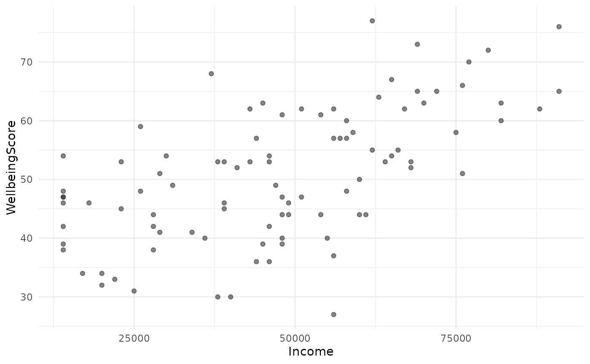
jplot(WellbeingScore ~ Income, community, line = "lm") # + regression line
#> Scatterplot: WellbeingScore and Income
#>
 jplot(WellbeingScore ~ Income, community, line = "lm", band = "see")
#> Scatterplot: WellbeingScore and Income
#>
jplot(WellbeingScore ~ Income, community, line = "lm", band = "see")
#> Scatterplot: WellbeingScore and Income
#>
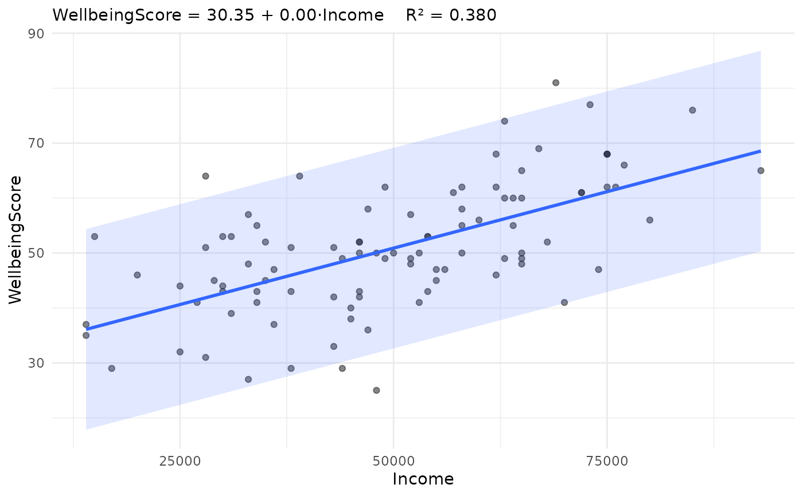
jplot(WellbeingScore ~ Income, community, by = Volunteer, line = "lm")
#> Scatterplot: WellbeingScore and Income by Volunteer
#>
#> Ignoring unknown labels:
#> • fill : "Volunteer"
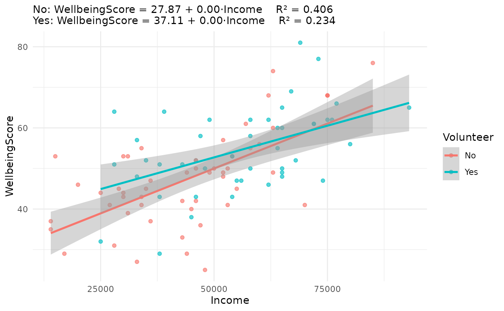
# Boxplot: assert the grouping variable as categorical (labelled
# variables otherwise enter numerically; jdummy() registration also works)
jplot(WellbeingScore ~ Region, community, categorical = "Region")
#> Boxplot: WellbeingScore and Region
#>
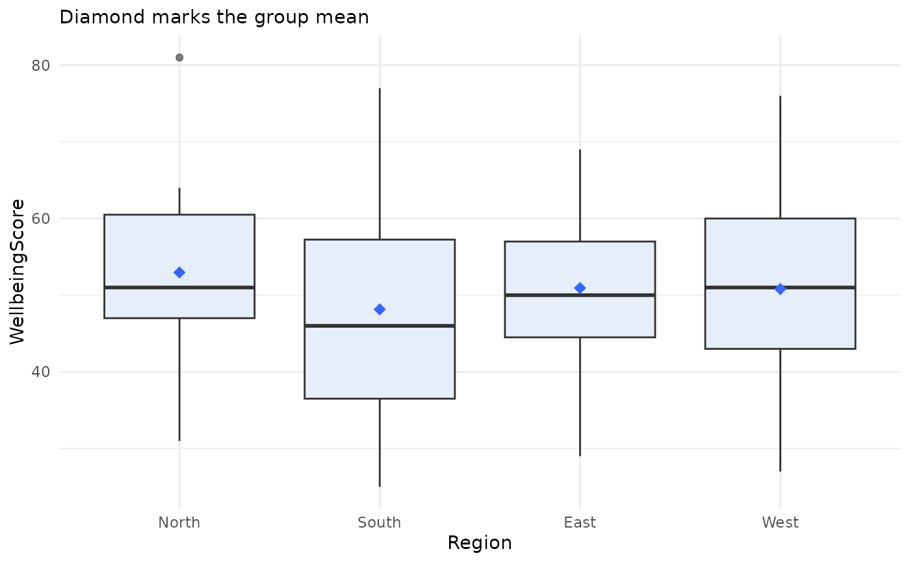
# Variable-list form (distributions and counts)
jplot(community, Age) # histogram
#> Histogram: Age
#>
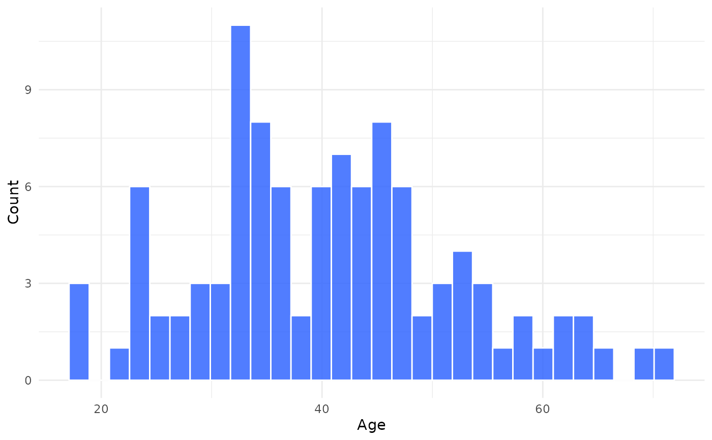
jplot(community, Region) # bar chart
#> Bar Chart: Region
#>
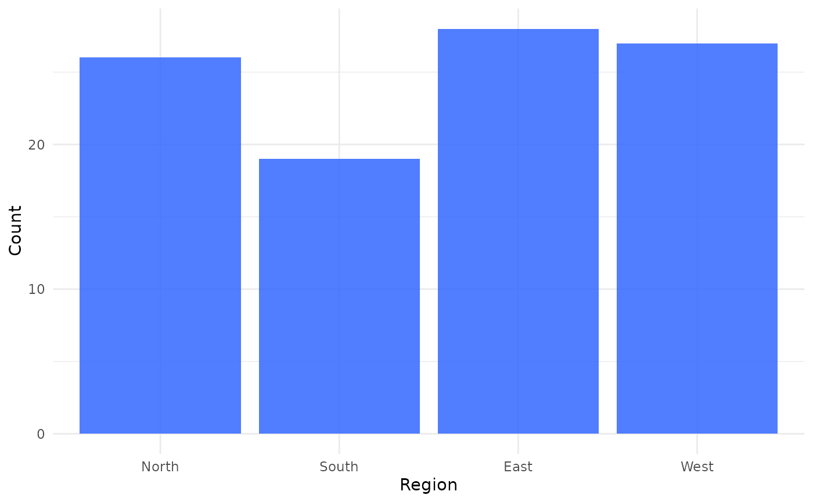
jplot(community, Region, Volunteer, # grouped bar chart
categorical = c("Region", "Volunteer"))
#> Grouped Bar Chart: Region and Volunteer
#>
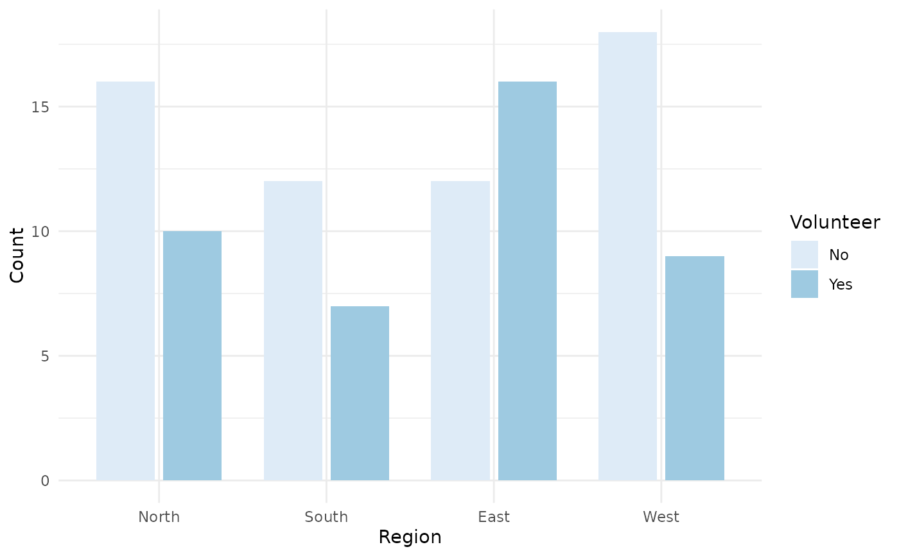
# Using juse() default (formula form; omit the data frame)
juse(community)
#> Default data frame set to: community
jplot(WellbeingScore ~ Income) # scatter
#> Scatterplot: WellbeingScore and Income
#> Using default data frame: community
#>
 jplot(WellbeingScore ~ Income, line = "lm") # + regression line
#> Scatterplot: WellbeingScore and Income
#> Using default data frame: community
#>
jplot(WellbeingScore ~ Income, line = "lm") # + regression line
#> Scatterplot: WellbeingScore and Income
#> Using default data frame: community
#>
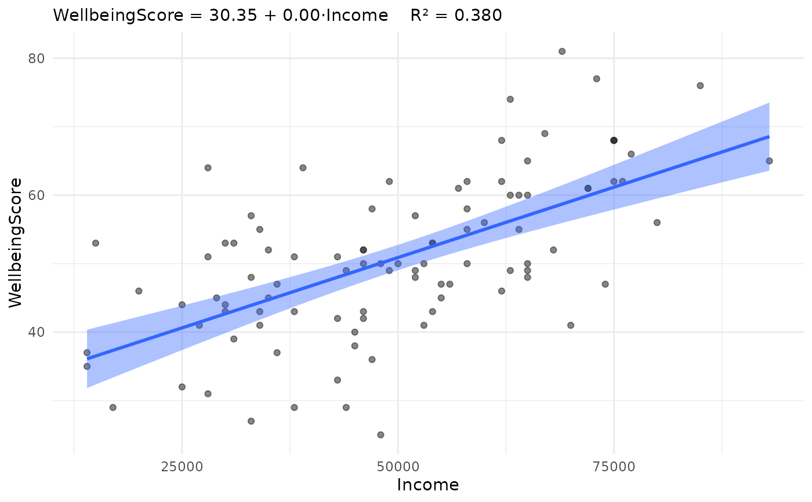